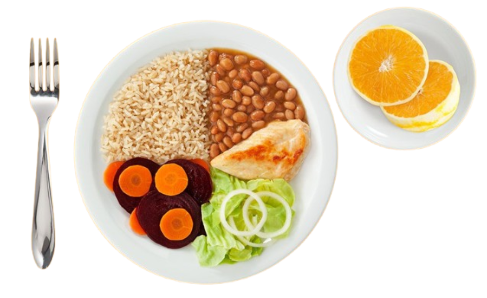
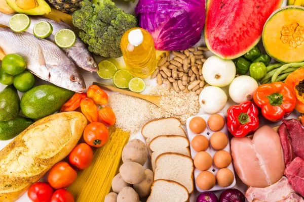

Quanta água beber por dia?
Depende do seu peso e do quanto você se exercita.
Comer bem é um ato de cuidado com você.
Uma alimentação equilibrada fornece os nutrientes que seu corpo precisa para funcionar bem todos os dias. A Organização Mundial da Saúde (OMS), agência da ONU responsável pela saúde, recomenda pelo menos 400g de frutas e vegetais por dia — cerca de 5 porções. Aqui você encontra informações confiáveis, com fonte, e dicas práticas para fazer escolhas mais saudáveis.


Pequenas mudanças, grandes resultados.
Conhecer os grupos alimentares e o papel de cada nutriente ajuda a montar refeições mais equilibradas no dia a dia. Abaixo você encontra um resumo prático sobre proteínas, carboidratos, gorduras boas, vitaminas e minerais — e como incorporá-los sem complicação na sua rotina.
Clique em um nutriente abaixo para ler a sua explicação detalhada.
As proteínas são responsáveis pela construção e reparação de músculos, pele e órgãos, além de participarem da produção de enzimas e hormônios. Estão presentes em carnes, ovos, leguminosas e laticínios.
São a principal fonte de energia para o corpo e o cérebro. Carboidratos complexos — aqueles que o corpo demora mais para digerir, como grãos integrais e tubérculos — liberam energia de forma gradual e ajudam a manter a saciedade. Eles também costumam vir acompanhados de fibras: a OMS recomenda pelo menos 25g de fibra alimentar por dia para adultos.
Gorduras insaturadas, presentes no azeite, abacate e oleaginosas, ajudam na absorção de vitaminas e na saúde cardiovascular, além de serem essenciais para o funcionamento do cérebro. Já a gordura saturada (presente em frituras e embutidos) deve ficar abaixo de 10% das calorias do dia, e a gordura trans, abaixo de 1% — segundo os limites recomendados pela OMS.
Vitaminas e minerais regulam funções vitais do organismo, do sistema imunológico à saúde dos ossos. Frutas, verduras e legumes coloridos garantem uma boa variedade desses nutrientes. Entre os minerais, vale atenção especial ao sódio: a OMS recomenda no máximo 5g de sal por dia (cerca de uma colher de chá), e boa parte do consumo em excesso vem de alimentos processados.
A alimentação brasileira vem mudando — e os números mostram por que escolhas melhores fazem diferença.
Fonte: Ministério da Saúde, pesquisa Vigitel 2006–2023.
dos brasileiros consomem frutas e verduras regularmente (5 dias ou mais por semana).
Ministério da Saúde, Vigitel 2023No mundo, 43% dos adultos estão com sobrepeso e 16% vivem com obesidade, segundo a Organização Mundial da Saúde (OMS, 2022) — mostrando que o desafio de comer bem vai muito além do Brasil.
Descubra quanto o seu corpo precisa de água e de energia por dia. São estimativas, não um plano alimentar.
Depende do seu peso e do quanto você se exercita.
Gasto de energia por dia, em repouso e com a sua rotina.
Você aprendeu os segredos dos nutrientes. Agora é hora de provar que você é um Mestre do Prato Saudável! Arraste os melhores alimentos para o seu prato e tente conseguir mais de 80% de saúde para conquistar um Emblema exclusivo no seu perfil.
Jogar Agora →